Marine Gardens
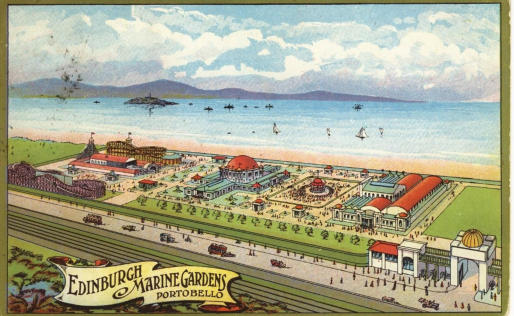
Opened in May 1909 by the Rt. Hon. Sir James Gibson M.P., Lord Provost of Edinburgh, the Marine Gardens covered around 30 acres of land stretching west from King’s Road to the Dog and Cat Home. This large amusement park was the brainchild of a group of businessmen who wished to re-use buildings from the highly successful Scottish National Exhibition, which had been held in Saughton Park, Edinburgh, in 1908. At the opening ceremony, the Chairman of the Directors of the Gardens, Ex-Bailie Moxon, said the Marine Gardens were the first in Scotland, although such amusement parks were numerous in America and on the Continent.
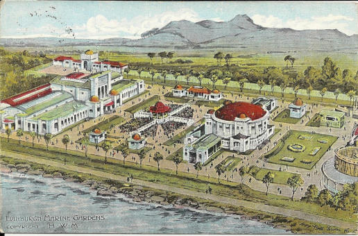
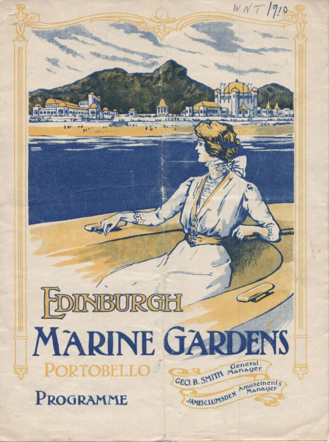
The gardens proved popular and three quarters of a million people visited the complex during the first year. They provided the public with a combination of indoor and outdoor amusements that could be enjoyed by rail passengers for 7d – this included a return fair from Edinburgh Waverley. The cost was normally 6d and for this a person got admission to the Gardens, a free seat in the onsite cinema and the Al Fresco theatre and free dancing in the Empress Ballroom, the main building in the grounds. For another 1d the customer could visit the Amusement Court.
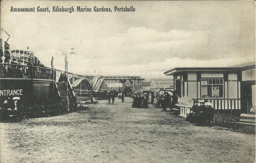
Within the Amusement Court there were various attractions including the Royal Scenic Railway, which was about a mile long with a switchback three tiers high. People could also enjoy a trip on a joy wheel, go on a mountain slide, find their way through a maze or visit river caves.
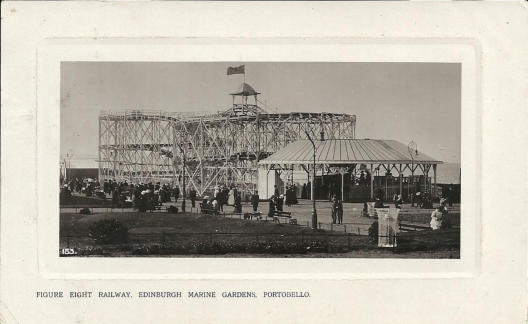
Another attraction was the Somali Village, inhabited by seventy people from Somaliland who put on a display for visitors by fighting with spears.
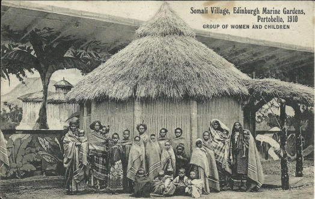
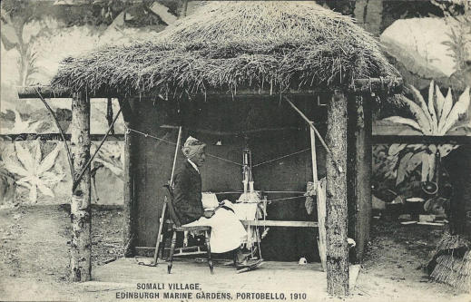
Somali families were brought over to live in a mud-hut compound and ‘perform’ their daily lives for visitors. It has been suggested that performances were seen more as salaried work rather than coerced labour, with some village elders flying back and forth from Europe to Africa to manage various villages. The village remained popular until its closure just before the First World War, when its grounds were co-opted for war purposes. There is no record of what happened to the families. In the Concert Hall there were daily all-star variety shows with groups such as the Humoresks, the Enterpeans and the Dandies providing song, dance and comedy sketches.
In the Al Fresco Theatre the public could see Pierrots, concert parties and popular comedians such as Henry Farrow.
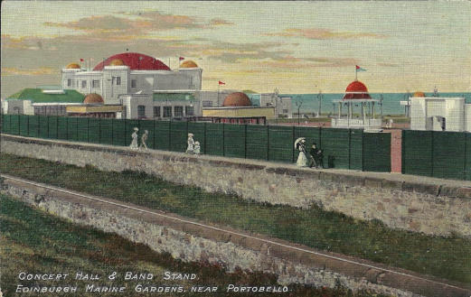
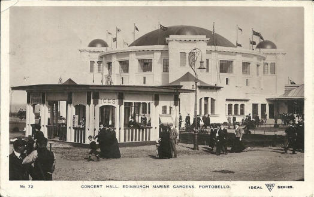
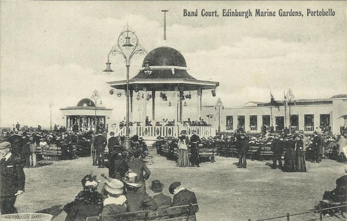
Visitors could also hear famous bands and musicians in the band court, or play a game of billiards in the billiard saloon where they might see T. Aitken, the Scottish champion. Another place to visit was the Industrial Hall, which housed exhibitions of items from Great Britain and abroad. There was also a sports area for football, and an ice-rink.
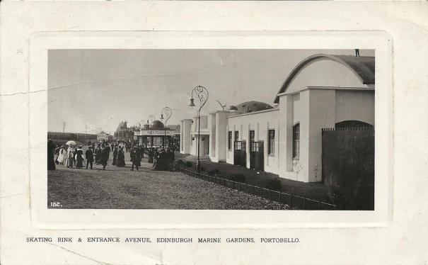
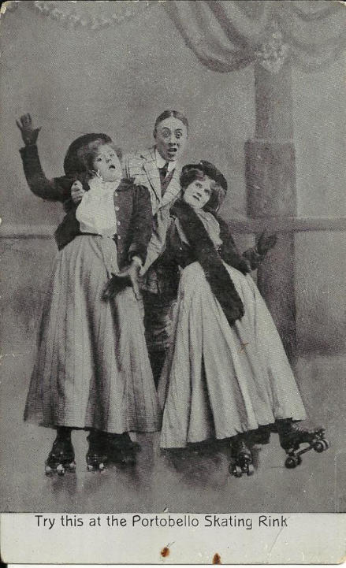
The full title of the amusement park was the Edinburgh Marine Gardens and Zoological Park. Within the gardens Bostock’s Zoo was responsible for showing a wide range of animals to the public. Two lion cubs, Wallace and Bruce, were born in the Gardens in 1911.
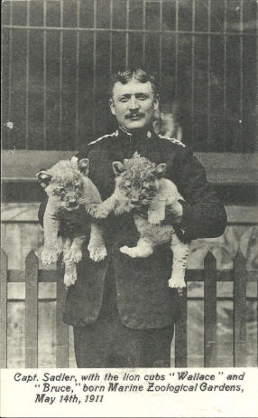
To encourage the public to continue to visit the Gardens new attractions always had to be organised. For example, on 22nd July 1912, the pioneer aviator Mr W.R. Evans displayed his flying machine in front of a large crowd.
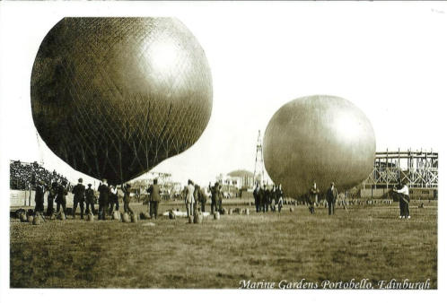
The advertisements below were placed in the Linlithgow Marches Official Programmes for 1911 and 1912. Clearly the gardens were under new management in 1911. The advert in 1912 suggests there was a Parisian atmosphere to be found. Interestingly both use the name Marine Park, rather than Gardens, with the 1912 advert adding Edinburgh to the title.
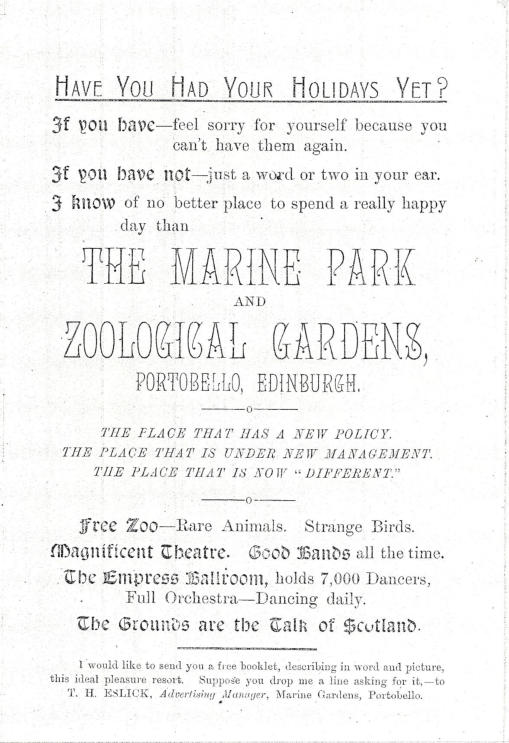
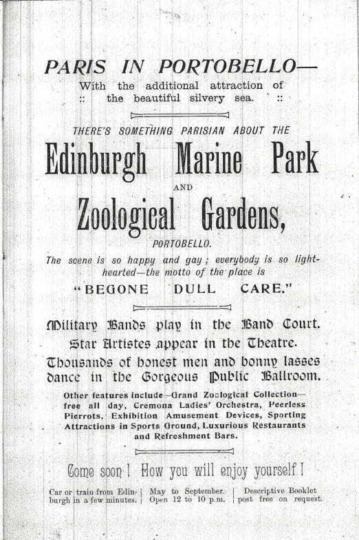
At the beginning of World War One, in 1914, the Marine Gardens closed and all the buildings apart from the Empress Ballroom, which provided billets for the troops, were demolished.
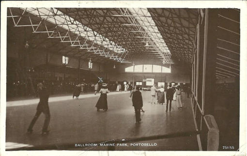
If you look closely at the postcard above you will see an ‘X’ marked on the card just above and to the left of the lady skater off-centre. This card was sent from Bill to Mrs Sharp in Leeds with the message “Dear Annie This is the room in which we sleep but you can only see about half of it in the picture. I have put a X over where I sleep…” Unfortunately, the stamp has been removed, taking with it the postmark. George Baird, who joined the 5th Royal Scots Territorials in 1910, was billeted there. He remembers that “The battalion mustered in the Moray Maltings, off London Road, in August 1914; from there we went to Redford Barracks; then to Craiglockhart School and, finally, to the Marine Gardens, the Ballroom …”. According to Baird several other places in the Gardens were used as sleeping quarters for the other ranks. Baird and his comrades remained there until 10th March 1915 when the Band of the 9th Royal Scots played them to Portobello Station. They left at 10.35pm for an unknown destination and eventually landed on the Dardanelles on 25th April 1915. The Marine Gardens re-opened at the end of the war but on a very limited scale. The Ballroom was refurbished and proved very popular up until 1939. Big-name dance bands such as Harry Roy, Ambrose and Roy Fox played there as well as the popular resident bands. It was also home to the roller-skating club. The only other part to re-open was the sports stadium, which was used for football, motorcycle speedway and greyhound racing. The Second World War meant the closure of the Marine Gardens for the second and final time, when it was again commandeered for war work. However, as late as 1963 the Ballroom was still standing and was being used as a maintenance depot for buses belonging to the Scottish Motor Traction Company. No evidence now exists of the Marine Gardens. There is currently a Lothian Buses depot and garage and various car showrooms on the land.